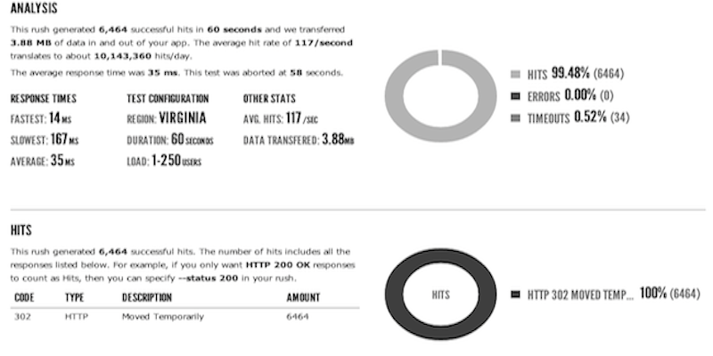
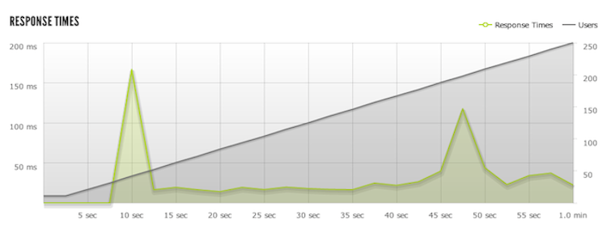
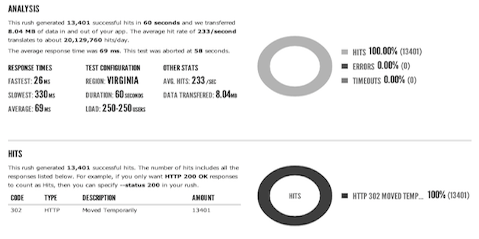
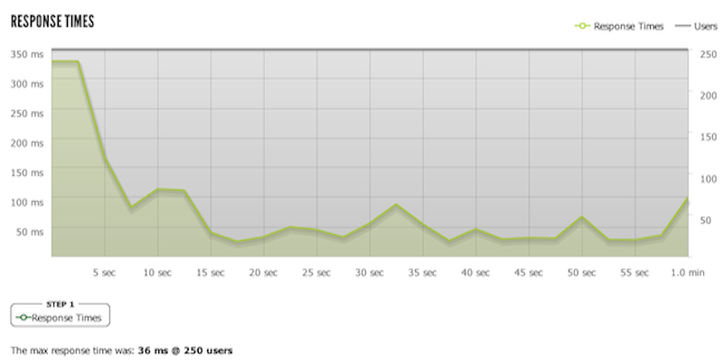
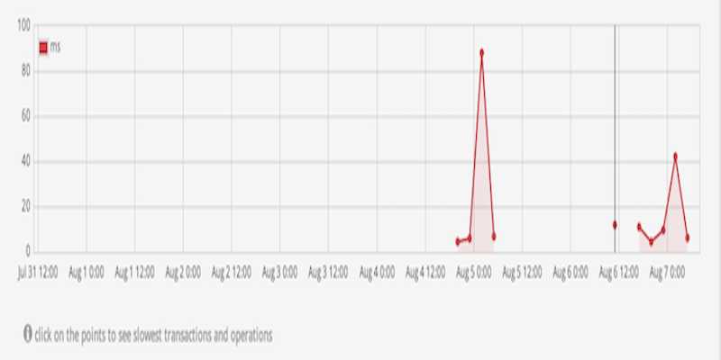

The Problem
As social creatures we crave the company of others and lately in this hectic world it's hard to catch some quality time with friends in the real world. When you do manage to grab a time slot a lot of time is wasted figuring out the
logistics of where to meet, how to get there, and all the other details.
Idea
Find Me is a web application built for all wi-fi devices that
facilitates meet-ups. Not only does it give users meeting place suggestions, it also shows real-time trajectory maps, calculates ETAs, gives access to a built-in chat, and incorporates fun geolocation games for users that are on-the-go. Find Me can also be used on the desktop to ensure that your loved ones get to where they need to go safely and with that grocery list on hand! Find Me is perfect for your next impromptu meeting.
Team Description
- Role: Database, Meet, Chat, Cross Site Scripting, Friendlist and Invites
- Bio: #15 on the varsity water-polo team
- Comments:This course has required me to explore and study on my own, while collaborating and adjusting to work with others
- Role: UI, Server, Authentication, Cookies, Hide and Seek, CSRF, Documentation
- Bio: Full time cat lady
- Comments: This summer course has allowed me to experiment with various aspects of web development and new web technologies. I have become quite familiar with how to develop both static and dynamic websites using node.js, express, and jquery. I have learned security practices for user authentication to protect against cross site request forgery and dictionary attacks.
- Role: Scavenger, Performance
- Bio: Car enthusiast
- Comments:
- Role: Register, Themes, Settings, Future Meetings, Submissions, Security
- Bio: IBM corp. employee
- Comments:
- Role: Manhunt, Picture Upload
- Bio: Hobyist stage magician
- Comments:
Code
Project Development Roadmap
A3 Tasks
- Authentication Security - Owner: Lia
- SQL Injection Protection - Owner: Everyone
- Performance and Scaling - Owner: Amit
- Cross-Site Scripting Prevention (XSS) - Owner: Ilya
- Cross-Site Request Forgery (CSRF) - Owner: Lia, Vera, Will, Ilya
- Games Functionality Extension - Owner: Will
- Documentation - Owner:Lia
Security Report
- Password Hashing and Salting - Passwords are salted with the user's date of registration and hashed with Node.js crypto module using SHA-1 as the hash function. The hashing occurs on the server side and is kept in our database.
- Captchas - Google's ReCaptcha API is used with Node.js recaptcha middleware to implement human verification after 1 unsuccessful login. User is verified when both the password and the captcha is correct for the specified e-mail address.
- Prepared Statements - We use Node.js postgres module and its prepared statements to send database queries. Parameterized queries prevent SQL Injections.
- Cross-Site Scripting (XSS) - To prevent XXS type attacks we have disallowed certain characters from our forms when users are entering input. Additionally in our chat box we have used Node.js sanitizer module
to validate user input and strip all html tags from the message. Our cookies that are with the cookies module are HTTP-only by default.
- Cross-site Request Forgery (CSRF) - To prevent CSRF type attacks we have used Node.js token middleware to validate that all GET/POST requests from the client are sent from valid sources. The middleware generates its own tokens and validates them appropriately. When the token is invalid the user is given an error page.
Performance Report
- 
- Load Test - To load test our app we used a Heroku add-on called Blitz. The load test ran for 60 seconds in which every 5 seconds 12.5 users where added to a pool of users that were accessing our app with a total of 250 users at the 60 second mark. We were able to produce an average of 117 hits/second with a 99.48% success rate and only 34 out of our total 6464 hits resulting in a timeout. We also had mostly consistent response times among our users with an average response time of 35ms peaking at 167ms.
- 
- 
- Stress Test -To stress test our app we also used Blitz. The stress test again ran for 60 seconds except this time we started with 250 users and maintained all of them throughout the duration of the test. We were able to produce an average of 233 hits/second with a 100% success rate over a total of 13401 hits. We also had mostly consistent response times among our users with an average response time of 69ms peaking at 330ms. Although the response time is longer in comparison to the load test its still reasonable.
- 
- 
- Database Testing - We improved the response time of our database by only letting it close a connection if a user has not made a request for a period of time. By allowing a connection to remain open we significantly improve response time. The spikes in the graph are just the time it takes to connect to the database, which is still under 100ms, but after a connection is made and opened data retrieval is under 20 ms.
Project Limitations
- While we spent a lot of time thinking about how the user would interact with our website on a phone, tablet, and computer, we did not think about the user outside of our web application. There are no e-mails sent to the user when they register, so they have no record of registration. The user is also not able to retrieve his password when lost. In this way we have cut out the end user from our development process, and only created this application for our personal use. In the future if we'd like to bring our application to the public, account confirmation is essential, and we can look to the nodemailer module to implement email confirmations. A password retrieval function can be implemented via e-mailed tokens with timed expiry that allows the user to change their password from their given email.
- Linking accounts from 3rd party applications is also of convenience to the user, both Google and FB have API's that allow easy account linking and creation. It is important to note that authentication happens on another site and because of this we would need to create CSRF exceptions for these third party sites.
- Due to time constraints many medium and low priority tasks have not been completed. For example currently while a Hide and Seek game can be maintained throughout sessions, the history of a game is not saved. The point system does not exist for any games either. There are many similar features that we would have loved to implement, such as profile pictures in the chat box, but the time for this assignment was limited. Given more time many of the medium and lower priority tasks could have been implemented for trouble.
{kind=link}
{kind=link}
{kind=link}
{kind=link}
{kind=link}